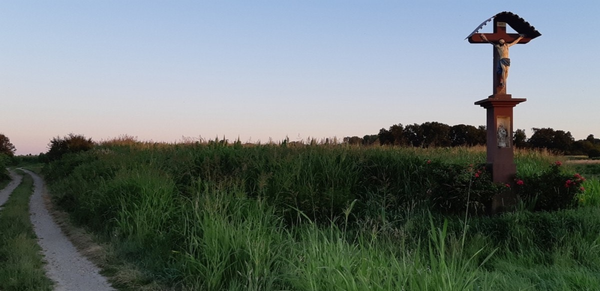
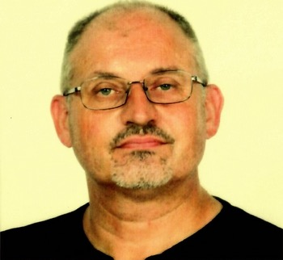
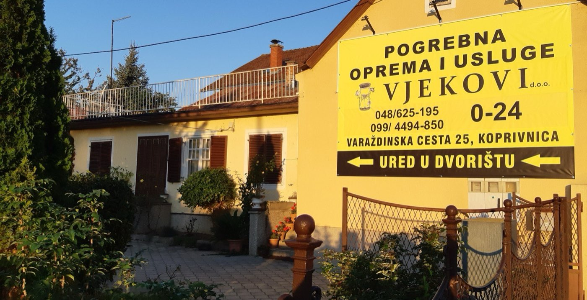
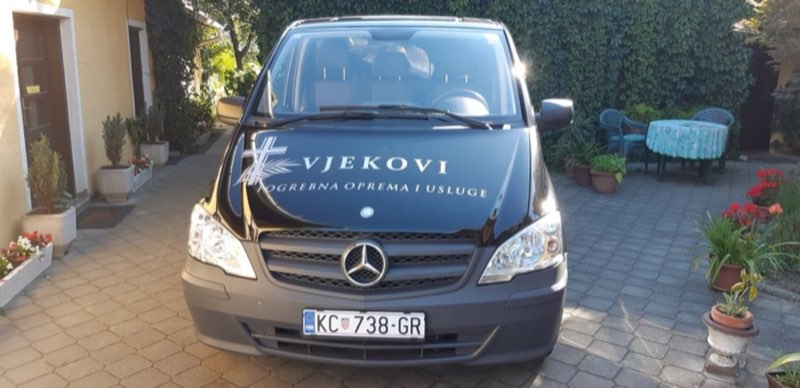
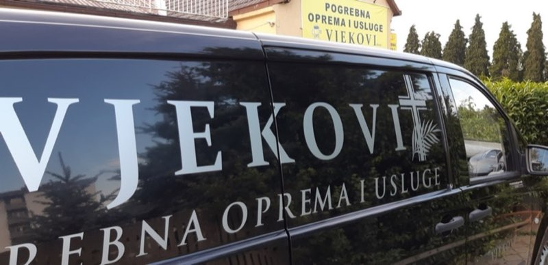

Dostojanstvenispraćaj, dogovorenna jednom mjestu.
U našem sjedištu u Varaždinskoj cesti 25 obitelj može odabrati pogrebnu opremu i dogovoriti sve oko ispraćaja: prijevoz pokojnika, termin ukopa, osmrtnice, vijence i glazbu.

Kada se smrt dogodi kod kuće
Mirno, redom. Kod prirodne smrti u kući najprije se poziva mrtvozornik. Za to vrijeme obitelj nas može nazvati i dogovoriti sve ostalo.
Pozovite mrtvozornika
Kod prirodne i nenasilne smrti u kući poziva se mrtvozornik. U slučaju nasilne smrti ili nesretnog slučaja zove se policija na 192.
Nazovite nas
Do dolaska mrtvozornika možete nas kontaktirati na 099 4494 850 ili 048 625 195 radi dogovora oko opreme, prijevoza, termina ukopa, svećenika, osmrtnica, vijenaca i glazbe.
Pričekajte odobrenje
Djelatnici pogrebnog poduzeća ne smiju premještati ni preuzeti tijelo pokojnika do odobrenja mrtvozornika.
U našem sjedištu, na jednom mjestu
Pogrebnu opremu nudimo od jednostavnijih do ekskluzivnih kompleta, a uz nju i sve što je potrebno za organizaciju posljednjeg ispraćaja.
- Pogrebna opremaOd jednostavnijih do ekskluzivnih kompleta: lijes ili sarkofag, posteljina, vjerski znak i drugi pogrebni dodaci.
- Prijevoz pokojnikaU zemlji i inozemstvu.
- OsmrtniceS vjerskim simbolima, slikom, grbom i drugim znakovljem.
- GlazbaNarudžba limene glazbe, zbora i drugih glazbenih skupina.
- Ukop, kremacija i ekshumacijaOrganiziramo u suradnji s nadležnim upravama groblja.
- Rashladna komoraZa pokojnika u slučaju višednevne odgode prijevoza i pogreba.
- Vijenci i buketiIzrađuju ih iskusne cvjećarke.
- Dokumentacija i institucijePo punomoći obitelji surađujemo s nadležnim institucijama (općinama, gradovima, drugim državama) nužnima za prijevoz i ukop pokojnika.
Bez obzira tko vrši ukop na određenom groblju, obitelj pokojnika ima slobodu izbora pogrebnog poduzeća u kojem će odabrati opremu i povjeriti organizaciju pogreba.Važno za obitelji

Pijetet prema pokojnima, poštovanje prema obiteljima
Vjekoslav Grošić ima dugogodišnje iskustvo u organizaciji pogreba: od prodaje pogrebne opreme i prijevoza pokojnika do posljednjih ispraćaja na grobljima, osmrtnica, glazbe, zbora i cvjetnih aranžmana.
Godinama je te poslove od A do Ž radio kod drugog poslodavca i uvidio da korisnicima pogrebnih usluga može ponuditi kvalitetnu opremu i usluge uz financijski povoljnije uvjete. Tako je nastala tvrtka Vjekovi. „Nismo svrha sami sebi, već se uz duboko poštovanje i pijetet prema pokojnima i njihovim obiteljima, kroz socijalnu osjetljivost i odgovornost, maksimalno angažiramo u organizaciji posljednjeg ispraćaja.”
Iskustvo osoblja
Pogrebna djelatnost temelji se na dugogodišnjem iskustvu osoblja koje njeguje pijetet i tradiciju.
Običaji mjesta
Prilagođavamo se željama obitelji i poštujemo običaje i kulturu mjesta posljednjeg ispraćaja.
Svaki ispraćaj je jedinstven
Svaki posljednji ispraćaj nosi nešto novo što primijenimo i koristimo za daljnju nadogradnju iskustva.
Povjerenje
Povjerenje koje su nam dali klijenti opravdavamo savjesnim postupanjem.
Izbor opreme u sjedištu
Lijesove, sarkofage, urne i cvjetne aranžmane možete odabrati u našem sjedištu, a dio ponude pogledati već ovdje.

Varaždinska cesta 25, ured u dvorištu
Ulaz je s Varaždinske ceste u Koprivnici, a ured se nalazi u dvorištu, kako je označeno na natpisu ispred kuće.
- AdresaVaraždinska cesta 25, 48000 Koprivnica
- Dostupnost0–24


Cvjećari i glazba
Za vijence, aranžmane i glazbu na ispraćaju surađujemo s lokalnim partnerima.
Nazovite nas u bilo koje doba
Za dogovor oko pogreba najbrže je nazvati. Za ostale upite možete nam pisati.
048 625 195 099 4494 850- E-poštavjekovi.kchr@gmail.com
- SjedišteVaraždinska cesta 25, 48000 Koprivnica
- Dostupnost0–24